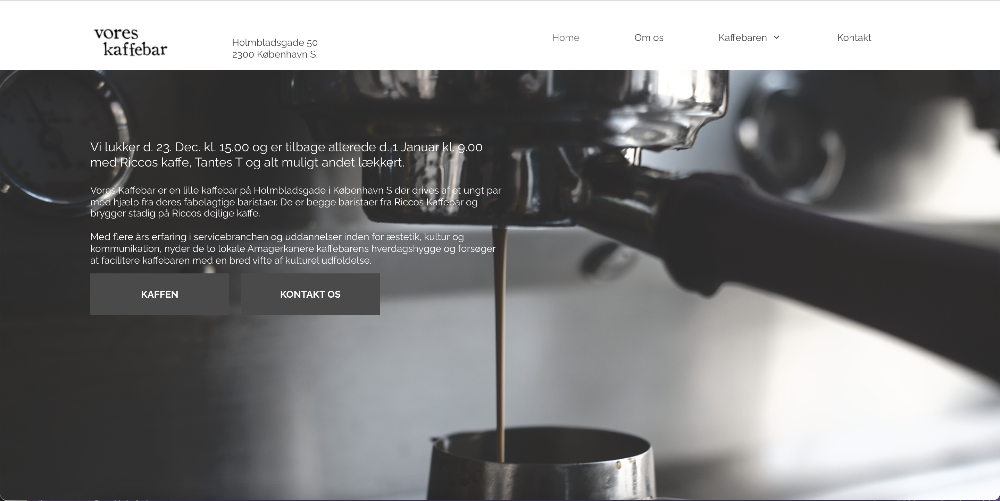

TEMA 5: Grundlæggende indhold
Grundlæggende indhold handlede i særdeleshed om videoproduktion;
forarbejdet, optagelse og redigering video og lyd i Adobe premiere
pro og Adobe audition. Første opgave i forløbet krævede, at vi i
grupper af 2 byggede en hjemmeside op om en passioneret person. Det
krævedes at vi foretog et videointerview med vedkommende og
understøttede interviewet med b-rolls. Desuden skulle vi også
fotografere og redigere billeder af vores interviewperson.
Samme redskaber brugte vi, da vi i grupper af 4, fandt en
virksomhed, hvis navn vi måtte låne til et redesign for dem.

05.01.01 Pilotprojekt Video og foto produktion indsat i HTML/CSS/JS
EMIL ELSKER UNITED
Pilotprojektet handlede om at lære, hvordan man producerer en video
og et interview. Det kræver forberedelse, bl.a. i form af en
interviweguide, et storyboard, samt en opstilling og test af ens
gear inden der optages, alt sammen ud fra teoriens bedste rammer.
Kravet til pilotprojektet var nemlig, at vi havde en ekstern
lydoptager med, og først i efterproduktionen skulle lyd og billede
synkroniseres.
I efterproduktionen, som foregik i Adobe Premiere Pro samt Adobe
Audition lærte jeg bl.a. teori og praksis omkring hvordan man laver
overgange mlm. klip, indsætter tekst og klipper film og lyd op, så
man får det vigtigste med, og for fjernet unødvendigheder som fx.
"øh".
Min medstuderende og jeg sørgede for, at interviewpersonen sad i
øjenhøjde med seeren, samtidig med han ikke kiggede direkte i
linsen. Vi matchede vores b-rolls, skudt i forskellige vinkler og
perspektiver, med hvad der blev sagt i interviwet.


05.02.01 Redesign og temadokumentation
Redesign af Vores Kaffebar
Vi foretog et redesign for Vores Kaffebar på Holmbladsgade, Amager.
For at det kunne lykkedes at arbejde så mange omkring ét projekt,
krævede det nogle værktøjer. Her blev vi introduceret til SCRUM, som
vi brugte via
www.trello.com. Git var også essentielt
for, at vi kunne samarbejde om dette site.
I begyndelsen udsendte vi en BERT-test til vores bekendte, for at
kunne opnå indsigter omkring hvordan den nuværende hjemmeside
optræder i folks bevidsthed. Samtidig bad vi vores virksomhed
besvare samme BERT-test, men med hensigten om at vide hvor de selv
ønsker at ligge på akserne.
Kunden udtrykte tydeligt et ønske om, at man fik samme stemning når
man besøger hjemmesiden, som man gør på caféen. Med alle disse
indsigter, udarbejdede vi forskellige moodboards med fokuspunkter
som fotostil, stemninger, farver og fonte.
Besøg før:
Besøg efter: